Francisco Plaza-Vega
Ingeniero Pesquero · Magíster en Estadística · Doctor en Estadística
Universidad de Santiago de Chile
Sistema pesquero, datos parciales y evolución de las aplicaciones entre 2008 y 2024.
¿Qué aprendimos al modelar el sistema?El proyecto FONDECYT, su pregunta central y sus tres etapas.
¿Qué componentes propone conectar?Imágenes, video, series temporales, hidroacústica, hábitat y tesis.
¿Qué capacidades estamos construyendo?Oportunidades, límites y condiciones para una aplicación responsable.
¿Dónde puede aportar la IA responsablemente?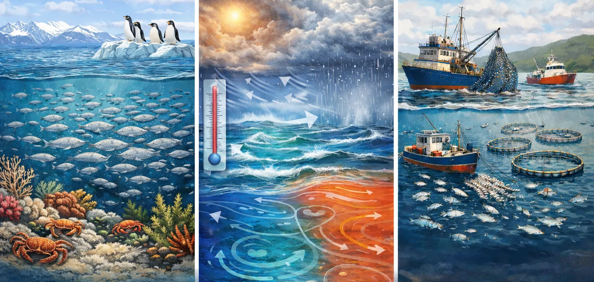
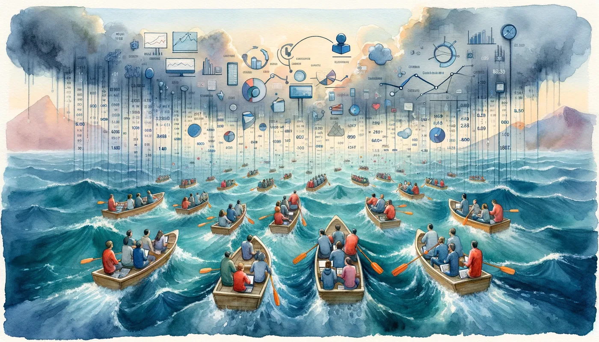
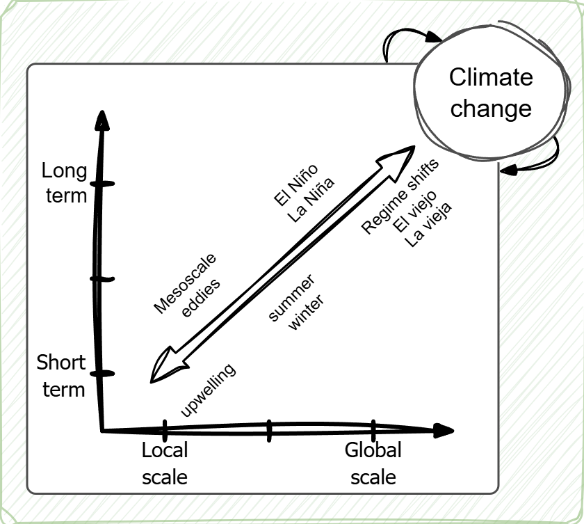
Afloramiento, estacionalidad, ENSO, regímenes decádicos y cambio climático operan en escalas distintas. Marco conceptual adaptado de Yáñez, et al. (2008).
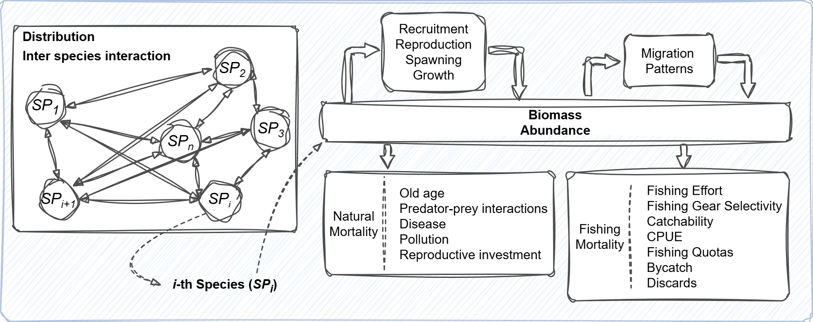
Abundancia, distribución, reclutamiento, capturabilidad, esfuerzo y manejo se retroalimentan.
Organiza cómo observar el sistema y cuantifica relaciones, variabilidad e incertidumbre.
¿Qué podemos afirmar y con qué precisión?Aprende reglas para predecir, clasificar o agrupar, y se contrasta en datos no usados para el ajuste.
¿Qué patrón se sostiene en casos nuevos?Aprende rasgos directamente desde imágenes, video, acústica o secuencias de alta dimensión.
¿Qué rasgos complejos podemos aprender?Síntesis conceptual: (Hastie, et al. 2009; Goodfellow, et al. 2016).
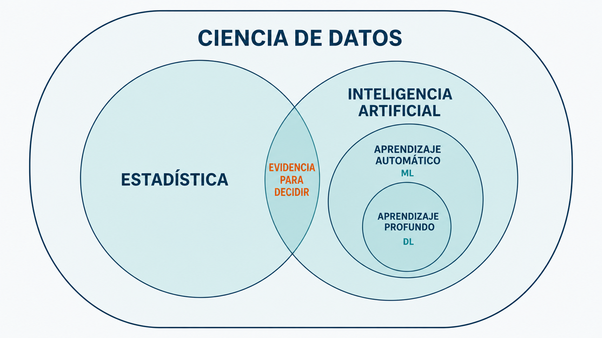
¿Podemos anticipar cambios en capturas o desembarques incorporando señales ambientales?
Trayectoria publicada: (Plaza 2009; Yáñez, et al. 2010; Naranjo, et al. 2015; Yáñez, et al. 2016; Yáñez, et al. 2017).
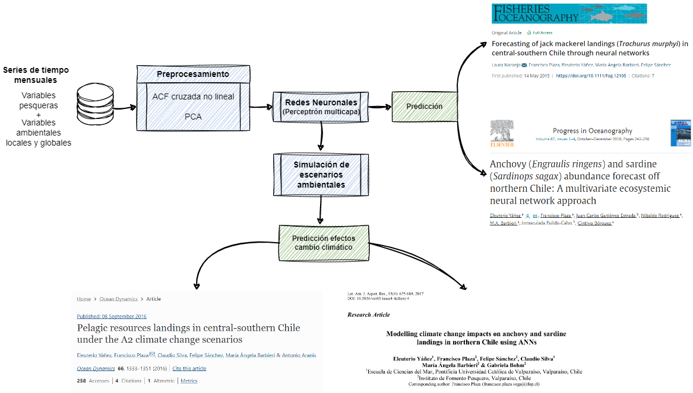
Artículo: Plaza, et al. (2018).
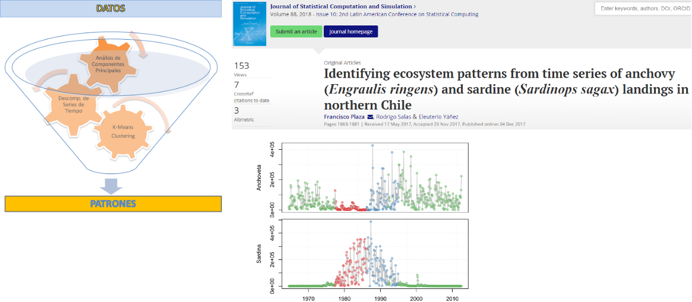
No solo importa el nivel medio. También importa cuándo el sistema se vuelve más variable, persistente o inestable.
Artículo: Plaza-Vega y Araya (2024).
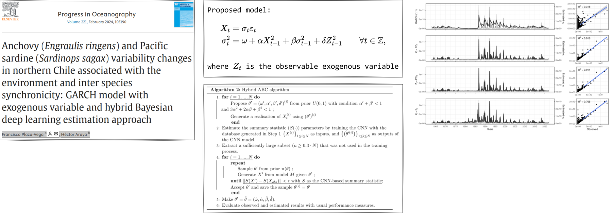
CLIMATE CHANGE: SPATIO-TEMPORAL ECOSYSTEM-BASED DYNAMICS USING STATISTICAL TOOLS GENERATIVE AI AND LONG MEMORY TIME SERIES
Conecta relaciones ambiente–recurso, clima regionalizado, escenarios e incertidumbre.Efectos no lineales, rezagados y dependientes de la escala entre ambiente, recurso y operación.
La información climática global no describe directamente procesos costeros relevantes para las pesquerías.
Datos, modelos pesqueros, downscaling y escenarios climáticos aportan fuentes distintas de incertidumbre.
Relaciones ambiente–recurso y modelos pesqueros espacio-temporales.
Información ambiental costera y escenarios climáticos globales.
Impactos potenciales sobre recursos y pesquerías bajo escenarios integrados.
Describir variabilidad temporal y espacial en recursos, pesquerías y ambiente.
Combinar modelos estadísticos, machine learning y deep learning según la pregunta.
Comparar líneas base, separar datos en espacio y tiempo y revisar coherencia ecológica.
FONDECYT de Iniciación 11251120 · etapa 1.
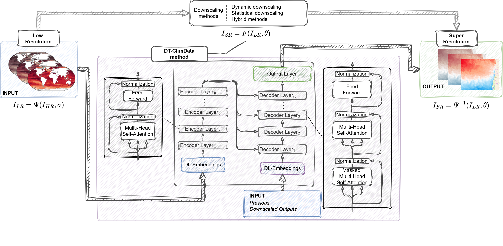
Campos ambientales de baja resolución e información previa.
Arquitectura basada en atención, condicionada por datos y restricciones.
Campos regionales de mayor resolución para contrastar con observaciones.
FONDECYT de Iniciación 11251120 · etapa 3.
escenario A trayectoria central escenario B
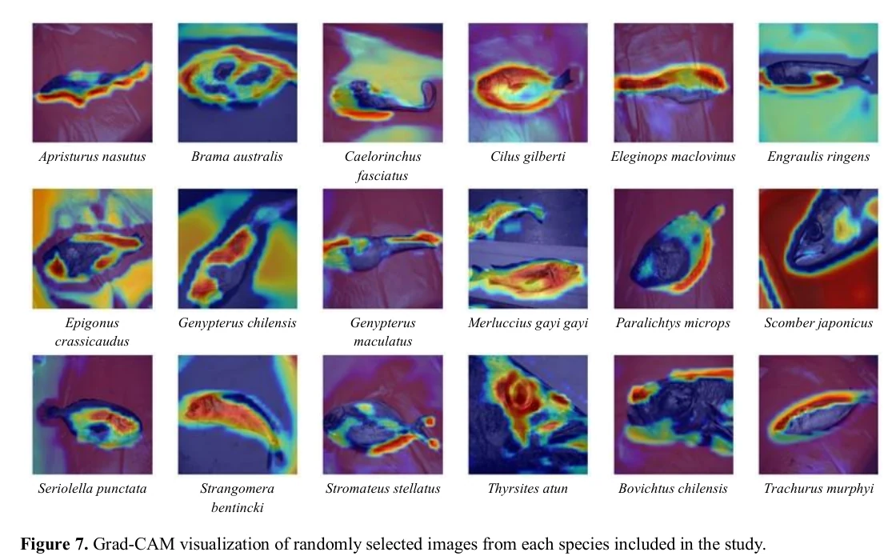
8.118 imágenes y 18 especies. Grad-CAM permite revisar qué regiones influyeron en la clasificación.
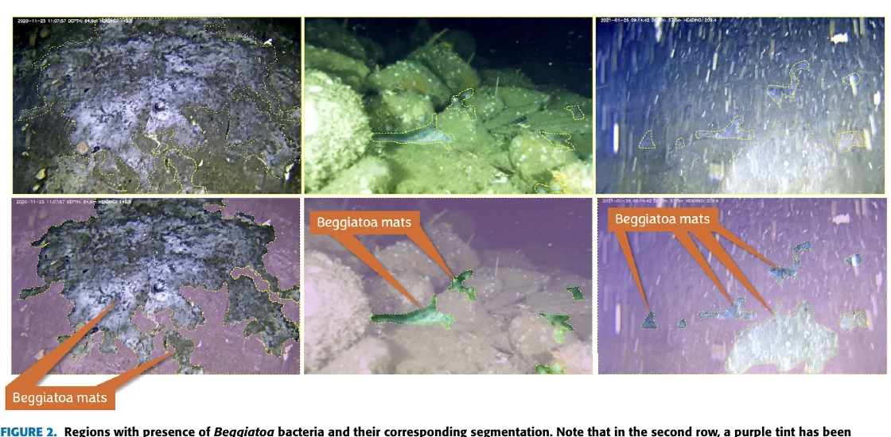
El video submarino puede convertirse en un indicador reproducible, aun con iluminación y fondos variables.
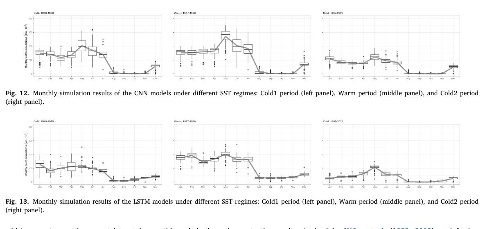
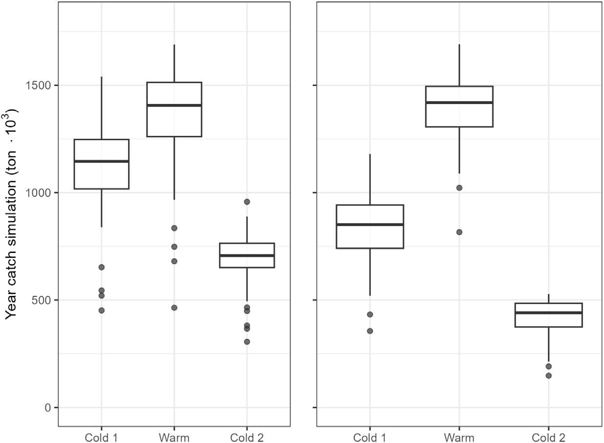
Artículo y figuras: Plaza-Vega, et al. (2026b), Figs. 12–14.
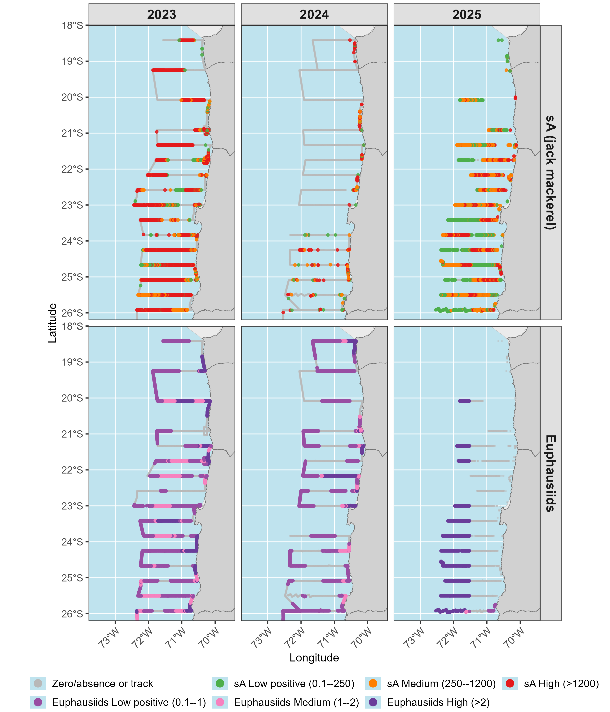
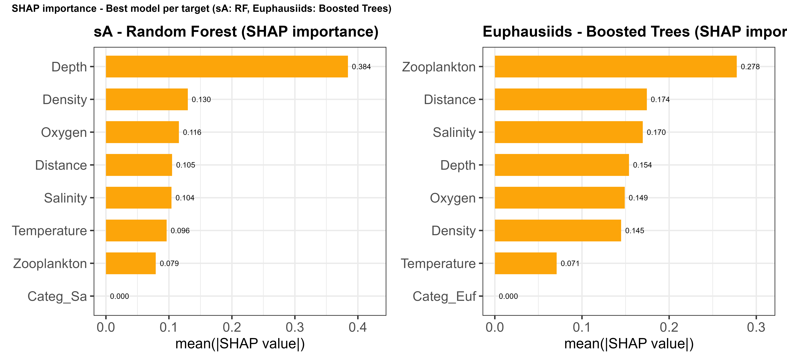
Revisión R1 y figuras: Plaza-Vega, et al. (2026a), Figs. 3 y 8.
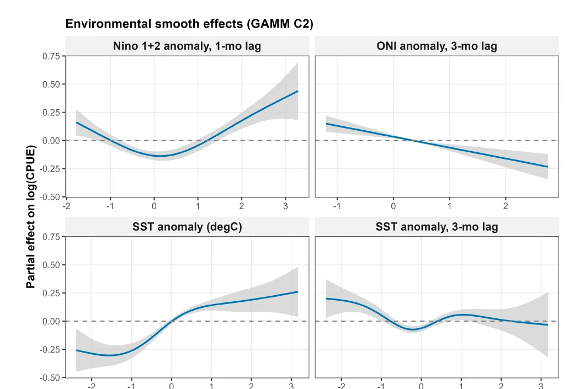
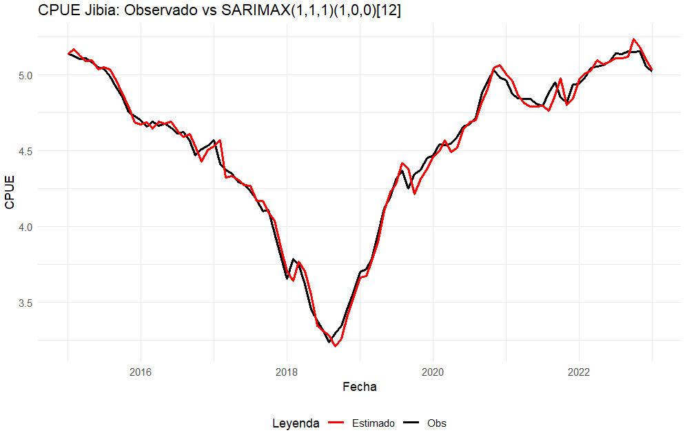
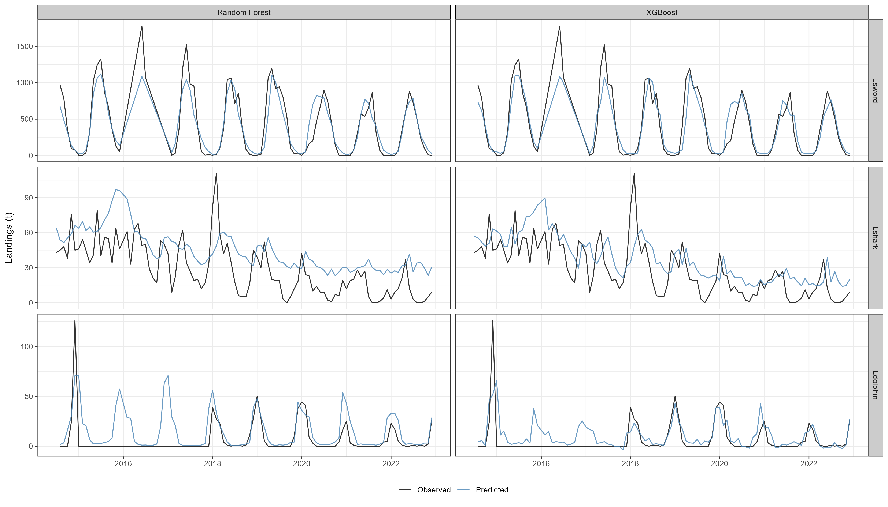
Revisión R1 y evidencia: Clavijo-Gorostiaga, et al. (2026), Fig. 5B; SHAP resumido de Fig. 6.
Trabajos asociados: (Plaza-Vega, et al. 2026a; Valderrama Villalobos 2025; Díaz-Vergara, et al. 2026; Clavijo-Gorostiaga, et al. 2026).
Especies, tallas, descartes, eventos y trazabilidad.
Fondo marino, condición ambiental, comportamiento y anomalías.
Disponibilidad, captura, distribución y riesgo operacional.
Regionalización, mapas y escenarios de cambio.
Clasificación, integración de cruceros y lectura multivariada.
Síntesis de evidencia e incertidumbre para procesos humanos.
Procesa imágenes, video, series y campos espaciales a escalas antes difíciles, pero no reemplaza el diseño de muestreo.
Estadística, oceanografía, modelos pesqueros y deep learning aportan piezas distintas.
La exactitud sin trazabilidad, incertidumbre e interpretación rara vez basta para apoyar una decisión real.
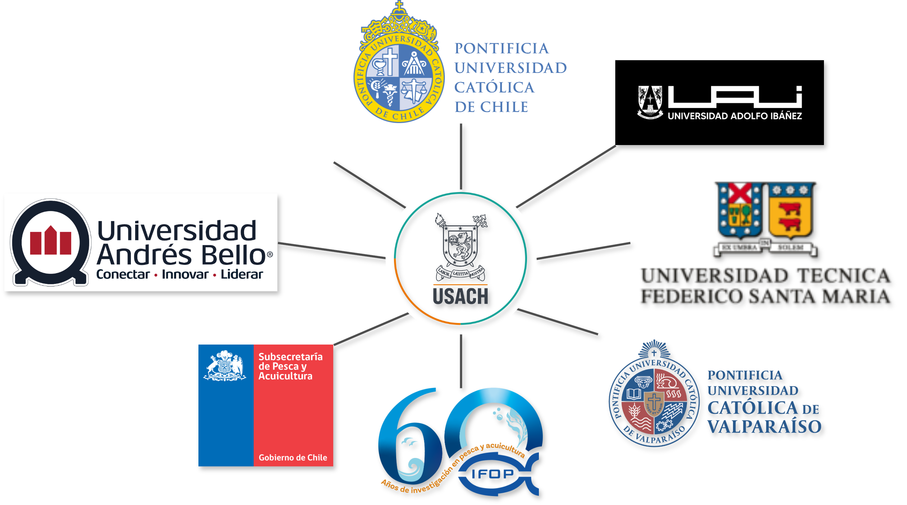